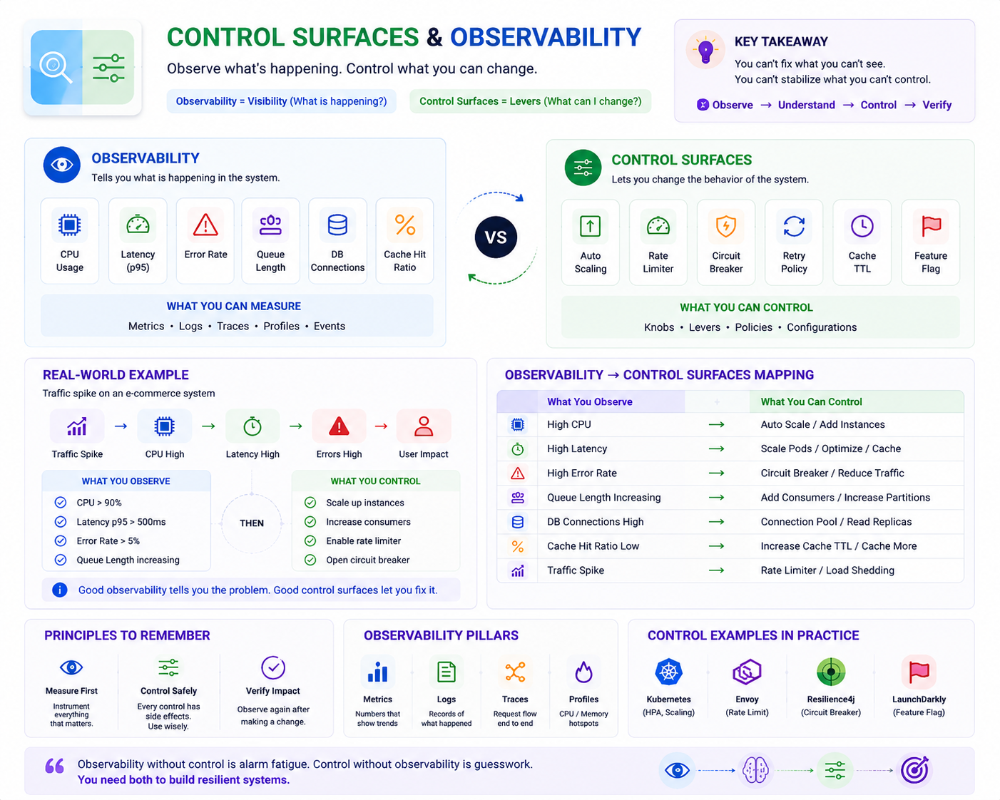

Interview notes — Senior / Staff Engineer level
Core Definition
Observability tells you what is happening.
Control Surfaces let you change what is happening.
Most systems have excellent monitoring. Very few have enough controls to respond to problems. A Staff Engineer always asks both questions.
The Car Analogy
Dashboard = Observability
Only shows information.
Controls = Control Surfaces
Actually changes the car's behavior.
Observability — What You Can Measure
Signals
Typical Tools
Metrics
CPU, latency, QPS
Logs
Events & errors
Traces
Request flow
Profiles
CPU/Mem hotspots
Control Surfaces — Knobs You Can Turn
Interview Cheat Sheet
| Observability Signal | Control Surface Response |
|---|---|
| CPU Usage | Auto Scaling |
| Latency | Increase Pods |
| Queue Length | Add Consumers |
| Error Rate | Circuit Breaker |
| Cache Hit Ratio | Cache TTL |
| DB Connections | Connection Pool Size |
| Retry Count | Retry Policy |
| Memory Usage | GC Tuning |
| Traffic | Rate Limiter |
Real Production Example — Traffic Spike
What you observe
These tell you what is wrong.
What you control
These change system behavior.
Common Interview Example — Kafka Lag
Observability
Control Surfaces
Staff Engineer Thinking
CPU is 95%
Database is overloaded
Which control surface reduces CPU without causing downstream failures?
Design Principle — Observe → Understand → Control → Verify
If you cannot observe a problem, you won't know it exists.
If you cannot control it, you cannot recover from it.
Interview Ready Notes
Observability Signals
Control Surfaces
Never deploy a feature without asking:
• Can I measure it? (Observability)
• Can I control it? (Control Surface)
• Can I verify the effect after making a change?
One-Line Summary
Observability answers "What is happening?" while Control Surfaces answer "What can I change?" — Great systems provide both.
